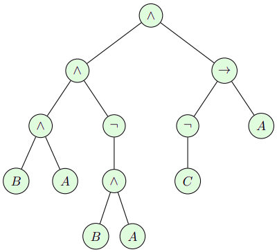
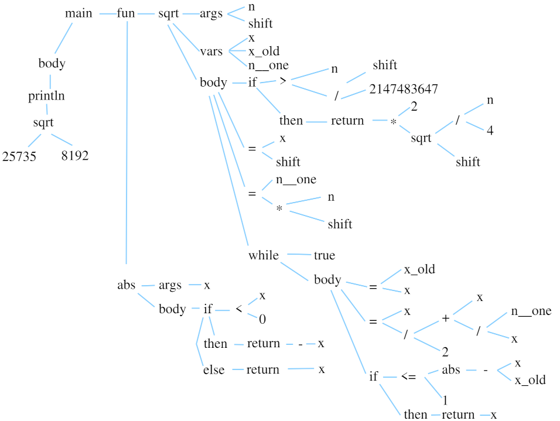

Abstract syntax trees
Introduction
I've checked several lectures on compilers, and nearly all of them start with lexers and parsers. However, I suggest postponing that for now and first asking ourselves: what kind of object do we actually want to work with?
Our input is a piece of text (just a long string), and our output should also be a piece of text. But between these two, we need to preserve some kind of entity — a meaning. We need a way to express this meaning, moving away from raw text, which is highly inconvenient to work with.
An essential part of any (imperative? Purists, feel free to correct me) programming language are expressions, both arithmetic and logical. One of the pioneers in formalizing expressions was Jan Łukasiewicz, who is best known for his work on Reverse Polish Notation.
For example, consider the following Boolean expression in infix notation:
To evaluate this expression, we must follow a specific order of operations, which can be represented as the following tree:

To compute the value of any node in the tree, we first need to evaluate its children.
This means we require memory to store intermediate results.
In standard calculators, this is often done using the = button (for intermediate results) and the m+ button (for storing values).
Jan Łukasiewicz proposed using a stack instead: whenever we compute the value of a node,
we simply take the operands from the top of the stack, corresponding to a depth-first traversal of our tree.
In our example, we first push \(A\) onto the stack, then \(C\). Since \(\neg\) is a unary operation, we pop a single element, evaluate it, and push the result back onto the stack. At this point, our stack contains two elements: \(A\) and \(\neg C\). The binary operation \(\rightarrow\) then takes both values, computes the result, and pushes it back onto the stack: \(((\neg C) \rightarrow A)\).
If we continue traversing the tree in depth-first order, all nodes will be visited in the following sequence:
This string is our original expression, rewritten from infix notation into reverse Polish notation. Essentially, we have two representations of the same algorithm in two different languages, while the tree helps us focus on the meaning rather than the linguistic differences.
Let me digress for a moment: Polish (postfix) notation eliminates the need for parentheses and the = button on calculators,
which significantly simplified programs for such devices.
In the USSR, programmable calculators like Elektronika MK-61
and MK-52 were widely used — without an = button.
Oh, how I smirked in elementary school, bringing in a calculator that no one but me could figure out! :)
In the early '80s, Hewlett-Packard advertised its legendary HP-12C with this poster:
Let me play Captain Obvious for a second: the crossed-out ≠ sign simultaneously represents the absence of that button on the calculator
and the idea that HP is unrivaled. It was a deliberate pun. And an inspired one.
Jokes aside, reverse Polish notation is simply a linear representation of an expression’s syntax tree — the core idea, the meaning.
Test Subject
Today, we'll work with a piece of code that computes \(\sqrt\pi\), storing it as a fixed-point number.
Representing real numbers with integer variables
As a brief digression, let's analyze what our example program does.
I have not included IEEE 754 floating-point numbers or posits in wend.
It's not difficult to do, but it would bloat the compiler, and I want to keep it as compact as possible.
Having just two different types (bool and int) is sufficient to demonstrate how type checking works.
So what should I do if I want to work with real numbers? My 32-bit variables may be labeled as integers, but I can interpret them however I like. Let's say I want to store the number \(\pi\) with an accuracy up to the fourth decimal place. Multiplying \(\pi\) by \(10^4\) results in 31415.9265(...). Thus, I can write the following code:
This will print 3.1415 on the screen.
The idea is simple: we choose a multiplier \(m\), and to represent a desired number (in this case, \(\pi\)), we store the integer part of the fraction \((\pi*m)/m\). The value of \(m\) determines the fixed precision of our real number representation. Historically, powers of two have been the preferred choice for \(m\), as division and modulo operations can be replaced with cheaper bit shifts and bitwise AND operations. For example, if \(m\) is \(2^{31}\), we can represent numbers from -1 to 1 with a step size of approximately \(4.7 \times 10^{-10}\). If \(m\) is \(2^{10}\), we can represent numbers from -2,097,152 to 2,097,151 with a step size of 0.0009765625.
Now, let's assume we have a variable p containing the following 32-bit value:
00000000000000000110010010000111
If we execute print p;, the output will be 25735.
However, I want to interpret only the upper 19 bits as the integer part, while the lower 13 bits represent the fractional part.
Using the following code:
The output will be 3.1414, which represents \(\pi\) with a precision of 13 bits after the decimal point, slightly coarser than one ten-thousandth.
Addition and subtraction of fixed-point numbers are performed using integer arithmetic, provided that the exponents of both operands are the same. If we have two fixed-point numbers \(p\) and \(q\) of the same precision, represented as \(p*m\) and \(q*m\), then their sum:
is the representation of the sum \(p + q\), since:
The same logic applies to subtraction. Multiplication, however, requires an adjustment:
To correctly represent the product \(p*q\) with precision \(m\), we must divide the product \(p*m * q*m\) by \(m\).
Computing the square root using Newton's method
My example program computes the square root of \(\pi\) with 13-bit precision. The algorithm itself is quite simple: if we want to compute \(x = \sqrt{a}\) for some positive number \(a\), we can use an iterative method. We start with an arbitrary value \(x_1\) (e.g., 1) and define the sequence:
Intuitively, this makes sense: if \(x_n\) is too large (\(x_n > \sqrt{a}\)), then \(a/x_n\) will be too small (\(a/x_n < \sqrt{a}\)), and their arithmetic mean \(x_{n+1}\) will be closer to \(\sqrt{a}\). This algorithm was known in Babylon over three thousand years ago — the famous YBC 7289 tablet contains a value of \(\sqrt{2}\) accurate to six decimal places.
Three thousand years later, it was discovered that this algorithm is equivalent to Newton's method for finding roots of the equation \(f(x) = x^2 - a\). Given an approximation \(x_n\), we approximate the function \(f\) by its tangent at \(x_n\) using a first-order Taylor expansion:
Setting this function to zero gives us an improved root approximation:
which leads exactly to the Babylonian formula.
The only remaining question is when to stop. In my code, I stop when the new approximation is exactly equal to the previous one. Phew, that’s the end of the math! Apologies, but I had to explain what the test program does. I chose this example because it is short enough while still using almost all concepts of wend.
AST for the sqrt()
Let me draw the syntax tree of our program.
The root of the tree is the entry point, the main() function.
Here’s what the full tree looks like:

The main function has two nested functions, which are children of the function list fun, as well as an instruction list body.
It is important to understand that this tree represents the structure of the program, but not its execution.
Unlike the previous example with RPN, to compute the value at the println node, we might need to make multiple recursive evaluations of the neighboring sqrt node.
Enough talking — I'm impatient to write some actual code! Let's get started. Take a close look at the tree: we can implement this abstraction with three main types of nodes:
- Function declarations
- Statements
- Expressions
Let's create a module syntree.py, which will store data exclusively, without any logic. A function declaration class might look something like this:
class Function:
def __init__(self, name, args, var, fun, body, deco=None):
self.name = name # function name, string
self.args = args # function arguments, list of tuples (name, type)
self.var = var # local variables, list of tuples (name, type)
self.fun = fun # nested functions, list of Function nodes
self.body = body # function body, list of statement nodes (Print/Return/Assign/While/IfThenElse/FunCall)
self.deco = deco or {} # decoration dictionary to be filled by the parser (line number) and by the semantic analyzer (return type, scope id etc)
The class has a field for the function name, a list of arguments, local variables, nested functions, and a list of instructions that make up the function body.
I also added an additional dictionary called deco, where I will put various uninteresting information such as the line number in the file, so that the error handler doesn't complain in very cryptic terms.
But that will be much later, for now, it will be an empty dictionary.
In exactly the same way, I have written instruction classes Print, Return, Assign, While, IfThenElse, as well as expression classes ArithOp, LogicOp, Integer, Boolean, String, Var, and FunCall.
That's all, nothing more is needed for the wend compiler!
The module code contains 64 lines, and I will not include it here in full, as it does not contain any logic, it is purely a storage.
It should no longer change until the very end (well, at least if my hands aren't completely crooked :) )
The source code is available on GitHub.
Now let's write some interesting code. Let's create a syntax tree from our example:
AST created manually
abs_fun = Function('abs', # function name
[('x', {'type':Type.INT})], # one integer argument
[], # no local variables
[], # no nested functions
[ # function body
IfThenElse(
LogicOp('<', Var('x'), Integer(0)), # if x < 0
[Return(ArithOp('-', Integer(0), Var('x')))], # then return 0-x
[Return(Var('x'))]) # else return x
],
{'type':Type.INT}) # return type
sqrt_fun = Function('sqrt', # function name
[('n', {'type':Type.INT}), ('shift', {'type':Type.INT})], # input fixed-point number (two integer variables)
[
('x', {'type':Type.INT}), # three local integer variables
('x_old', {'type':Type.INT}),
('n_one', {'type':Type.INT})
],
[], # no nested functions
[ # function body
IfThenElse(
LogicOp('>', Var('n'), ArithOp('/', Integer(2147483647), Var('shift'))), # if n > 65535
[Return(ArithOp('*', Integer(2), # return 2*sqrt(n/4)
FunCall('sqrt', [ArithOp('/', Var('n'), Integer(4)), Var('shift')])))],
[]), # no else statements
Assign('x', Var('shift')), # x = shift
Assign('n_one', ArithOp('*', Var('n'), Var('shift'))), # n_one = n*shift
While(Boolean(True), [ # while true
Assign('x_old', Var('x')), # x_old = x
Assign('x', # x = (x + n_one / x) / 2
ArithOp('/',
ArithOp('+',
Var('x'),
ArithOp('/', Var('n_one'), Var('x'))),
Integer(2))),
IfThenElse( # if abs(x-x_old) <= 1
LogicOp('<=',
FunCall('abs', [ArithOp('-', Var('x'), Var('x_old'))]),
Integer(1)),
[Return(Var('x'))], # return x
[]), # no else statements
]),
],
{'type':Type.INT}) # return type
main_fun = Function('main', # function name
[], # no arguments
[], # no local variables
[sqrt_fun, abs_fun], # two nested functions
[Print( # println sqrt(25735, 8192);
FunCall('sqrt', [Integer(25735), Integer(8192)]),
True)
],
{'type':Type.VOID}) # return type
We will discuss next time about how to create such a tree from source text automatically.
For now, compare this code to the tree diagram.
An attentive reader will notice some discrepancies, for example, the unary operation -x is represented as the binary operation 0-x, but these are implementation details:
the programmer using wend should be able to write -x without worrying about how exactly this expression is transformed into a syntax tree.
For completeness, I have included the type of variables and function returns in the decoration dictionaries of our Christmas tree, but at this stage, I will not use it, as Python has dynamic typing, and type inference and checking will concern me much later.
From syntax tree to python code
The final code can be generated with a simple depth-first traversal of our syntax tree.
For example, if we visit an Assign node, it is guaranteed to have only two children: a Var node representing the variable we are assigning to,
and one of the expression nodes ArithOp, LogicOp, Integer, Boolean, Var, and FunCall.
Note that the Var node itself is an expression (we can assign the value of another variable, right?).
However, as you might have noticed, I am not obsessed by hierarchy of classes, and there is no inheritance at all; the separation into expressions and instructions is quite informal.
Back to the code generation during the visit of an Assign, this node has two children: the string Assign.name and a reference to another expression node Assign.expr.
My compiler code has the following structure:
That is, we generate code like x = src, where src is the expression code generated by the call to the expr(n.expr) function.
The full source code of the code generator from the syntax tree can be found on GitHub, it's just 50 lines.
By running our not-yet-a-compiler on a manually constructed syntax tree, we get the following result:
def main():
def sqrt(n, shift):
x = None
x_old = None
n_one = None
if (n) > ((2147483647)/(shift)):
return (2) * (sqrt((n) // (4), shift))
else:
pass
x = shift
n_one = (n) * (shift)
while True:
x_old = x
x = ((x) + ((n_one) // (x))) // (2)
if (abs((x) - (x_old))) <= (1):
return x
else:
pass
def abs(x):
if (x) < (0):
return (0) - (x)
else:
return x
print(sqrt(25735, 8192), end='\n')
When this file is run, 14519 will be displayed on the screen, which is the representation of the number \(\sqrt\pi\) with a precision of 13 bits after the decimal point! We'll talk about displaying 3.1414 instead of 14519 next time, as I don't feel like manually constructing syntax trees any further.
Check the v0.0.1 tag in the repository.